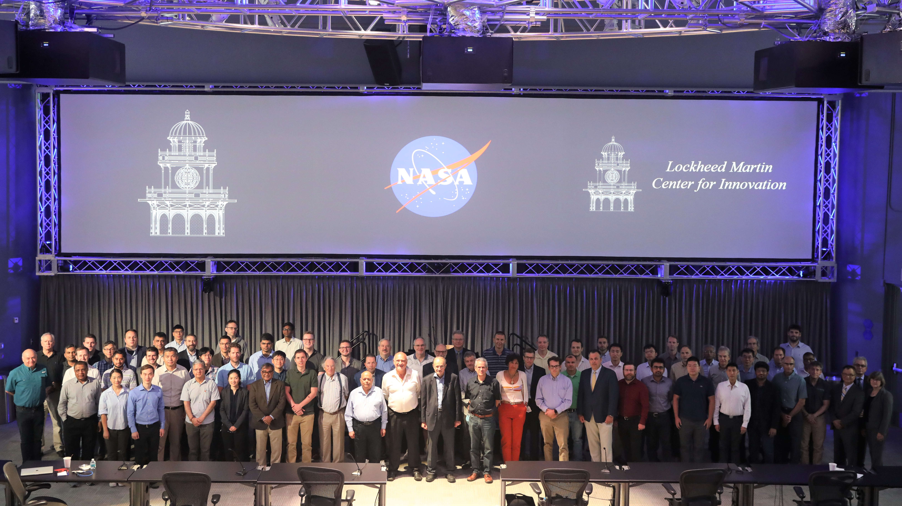

Public Access (formerly Langley Research Center)Turbulence Modeling Resource |
2022 Symposium on
Turbulence Modeling: Roadblocks, and the
Potential for Machine Learning
PRESENTATIONS AND OTHER DETAILS

A summary report of the symposium is available here as a NASA TM:
NASA/TM-20220015595, by C.L. Rumsey and G.N. Coleman, November 2022.
NEW: Philippe Spalart paper
"An Old-Fashioned Framework for Machine Learning in
Turbulence Modeling", based on his presentation at this symposium and appearing here with his permission.
This paper can be found on
http://arxiv.org/abs/2308.00837, and a version also appeared in
the ERCOFTAC Bulletin, 134, March 2023, 26-36.
PDFs of all presentations can be downloaded in a single zipped file:
Slide_presentations.zip (161 MB)
The following pdf files are available individually:
Return to: PRS2022 Symposium Main Page Return to: Turbulence Modeling Resource Home Page
Recent significant updates:
08/07/2023 - Posted Spalart paper "An Old-Fashioned Framework for Machine Learning in Turbulence Modeling"
11/25/2022 - Posted NASA TM summary report of the symposium
Page Curators: Christopher Rumsey,
Ethan Vogel,
Clark Pederson
Last Updated: 10/29/2024